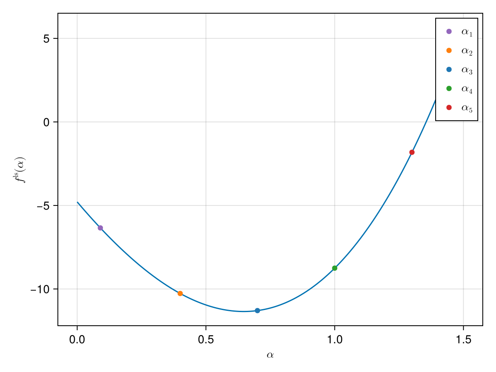

Backtracking Line Search
A backtracking line search method determines the amount to move in a given search direction by iteratively decreasing a step size $\alpha$ until an acceptable level is reached. In SimpleSolvers we can use the sufficient decrease condition and the curvature condition to quantify this acceptable level. The sufficient decrease condition is also referred to as the Armijo condition and the sufficient decrease condition and the curvature condition are referred to as the Wolfe conditions[1] [3].
Backtracking Line Search for a Line Search Problem
We note that when performing backtracking on a line search problem care needs to be taken. This is because we need to find equivalent quantities for $\mathrm{grad}_{x_k}f$ and $p$. We first look at the derivative of the line search problem:
\[\frac{d}{d\alpha}f^\mathrm{ls}(\alpha) = \frac{d}{d\alpha}f(\mathcal{R}_{x_k}(\alpha{}p)) = \langle d|_{\mathcal{R}_{x_k}(\alpha{}p)}f, \alpha{}p \rangle,\]
because the tangent map of a retraction is the identity at zero [5], i.e. $T_{0_x}\mathcal{R} = \mathrm{id}_{T_x\mathcal{M}}$. In the equation above $d|_{\mathcal{R}_{x_k}(\alpha{}p)}f\in{}T^*\mathcal{M}$ indicates the exterior derivative of $f$ evaluated at $\mathcal{R}_{x_k}(\alpha{}p)$ and $\langle \cdot, \cdot \rangle: T^*\mathcal{M}\times{}T\mathcal{M}\to\mathbb{R}$ is the natural pairing between tangent and cotangent space[2] [6].
We again look at the example introduced when talking about the sufficient decrease condition and cast it in the form of a line search problem:
ls_obj = linesearch_problem(obj, grad, cache, state)This optimizer problem only depends on the parameter $\alpha$. We plot it:

Example
We show how to use line searches in SimpleSolvers to solve a simple toy problem[3]:
sl = Backtracking()SimpleSolvers contains a function SimpleSolvers.linesearch_problem that allocates a SimpleSolvers.LinesearchProblem that only depends on $\alpha$:
We now use this to compute a backtracking line search[4]:
ls = LinesearchState(sl)
α = 50.
αₜ = ls(ls_obj, α)0.78125And we check whether the SimpleSolvers.SufficientDecreaseCondition is satisfied:
sdc = SufficientDecreaseCondition(c₁, x, f(x), g, p, obj)
sdc(αₜ)trueSimilarly for the SimpleSolvers.CurvatureCondition:
c₂ = .9
cc = CurvatureCondition(c₂, x, g, p, obj, grad)
cc(αₜ)true- 1If we use the strong curvature condition instead of the standard curvature condition we conversely also say that we use the strong Wolfe conditions.
- 2If we are not dealing with general Riemannian manifolds but only vector spaces then $d|_{\mathcal{R}_{x_k}(\alpha{}p)}f$ simply becomes $\nabla_{\mathcal{R}_{x_k}(\alpha{}p)}f$ and we further have $\langle A, B\rangle = A^T B$.
- 3Also compare this to the case of the static line search.
- 4We also note the use of the
SimpleSolvers.LinesearchStateconstructor here, which has to be used together with aSimpleSolvers.LinesearchMethod.